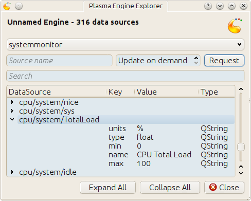

Data engines
Table of Contents
1 Hello?
1.1 Getting more than one shot
Our script is run exactly once! To get more than this single run, we have to convince plasma to give us additional cpu cycles. this is done by defining a data sink and connecting it to a source.
1.2 A sink with a slot
An object acts as the sink and a function as the slot that connects the source to the sink
var sink = { dataUpdated: function (name, data) { print("ping"); } };
The name of the sink Object can be anything
var CatDog = { dataUpdated: function (name, data) { print("ping"); } };
The name of the slot function however is to be dataUpdated. The function
always receives two parameters. We'll dicuss their content in a bit.
1.3 Connecting the slot to a source
A plasma engine provides sources. They're connected to via their
connectSource method. The arguments this method takes are the name of the
source, the sink object and the desired interval length in which sink's
dataUpdated slot should be called.
var engine = dataEngine("SourcesServingEngine") var intervalInMilliSeconds = 1000; // one second engine.connectSource("SourceOfInterest", sink, intervalInMilliSeconds);
This code has a flaw. The connection might fail of
- the source doesn't exist
- the sink object doesn't define the
dataUpdatedslot.
This flowing version doesn't really handle these situation, but at least tells us about it.
var engine = dataEngine("SourcesServingEngine") var intervalInMilliSeconds = 1000; // one second if (! engine.connectSource("SourceOfInterest", sink, intervalInMilliSeconds) ) { print("connection attempt to SourceOfInterest in SourcesServingEngine failed D:"); }
To actually find a data source and a source it provides we gonna use
% plasmaengineexplorer

Plasma engine explorer
In image plasmaengineexplorer the source Local of the time data engine is expanded. This code uses it
var sink = { dataUpdated: function (name, data) { print("ping"); } }; var engine = dataEngine("time"); if ( engine.connectSource("Local", sink, 1000) ) { print("connection established"); } else { print("connection attempt failed"); } print("main.js ends here");
and results in
ping connection established main.js ends here ping ping ping
As you can see, connectSource calls the dataUpdated slot. So make sure that it's already there. If not
var sink = {}; var engine = dataEngine("time"); if ( engine.connectSource("Local", sink, 1000) ) { print("connection established"); } else { print("connection attempt failed"); } sink.dataUpdated = function (name, data) { print("ping"); } print("main.js ends here");
we'll get
% plasmoidviewer . connection attempt failed main.js ends here %
1.4 Exploring a data source
So far it is only confirmed that dataUpdated was called back. Now we take a
look at the value of the parameters it is called with by the data engine.
First the name. This code for the sink section
var sink = { dataUpdated: function (name, data) { print(name); } };
results in
Local connection established main.js ends here Local Local ...
This is the same name we used with connectSource. This becomes important
when we subscribe to more than one data source.
var sink = { dataUpdated: function (name, data) { print(name); } }; var engine = dataEngine("time"); if ( engine.connectSource("Local", sink, 1000) ) { print("connection to 'Local' in 'time' established"); } else { print("connection attempt to 'Local' in 'time' failed"); } // if ( engine.connectSource("Europe/London", sink, 1000) ) { print("connection to 'Europe/London' in 'time' established"); } else { print("connection attempt to 'Europe/London' in 'time' failed"); } print("main.js ends here");
% plasmoidviewer . Local connection to 'Local' in 'time' established Europe/London connection to 'Europe/London' in 'time' established main.js ends here Local Europe/London Local Europe/Londo
Now the data. We're using the version that only connects to Local in
time with this slot definition
var sink = { dataUpdated: function (name, data) { print("===== data ====="); for(var k in data) { print("key : " + k); print("data[key] : " + data[k]); print("typeof data[key] : " + typeof data[k]); print("----"); } } };
It results in
===== data ===== key : Timezone Continent typeof data[key] : string data[key] : Europe ---- key : Offset typeof data[key] : number data[key] : 3600 ---- key : DateTime typeof data[key] : object data[key] : Sun Feb 12 2012 09:46:52 GMT+0100 (CET) ---- key : Timezone typeof data[key] : string data[key] : Europe/Berlin ---- key : Time typeof data[key] : object data[key] : 09:46:52 ---- key : Date typeof data[key] : object data[key] : Sun Feb 12 2012 00:00:00 GMT+0100 (CET) ---- key : Timezone City typeof data[key] : string data[key] : Berlin
The Offset looks off, doesn't it?. That's because its unit is seconds. My
time zone has an offset of
3600 s * 1 min
3600 s = -------------- = 60 min
60 s
60 min * 1 h
60 min = -------------- = 1 h .
60 min
If you compare this data with what is shown in plasmaengineexplorer, then you'll notice it being exactly the same, except for the actual point in time. For Qt data types that don't have an builtin equivalent in Javascript we get an object.
Lets have a peek into what one of these converted Qt types has to offer
var sink = { dataUpdated: function (name, data) { print("==== data ====="); var dateTime = data["DateTime"] print('<properties of data["DateTime"]'); for(var k in dateTime) { print("key : " + k); print('typeof dateTime[key] : ' + typeof dateTime[k]); print('dateTime[key] : ' + dateTime[k]); } print('</properties of data["DateTime"]'); } };
==== data ===== <properties of data["DateTime"] </properties of data["DateTime"]
Nothing? That is correct. This shell around an C++ object only hands out you a string representation of its value to Javascript. Though they are not showing up with the code above, these objects have the following methods
toString()toLocaleString()valueOf()hasOwnProperty(V)isPrototypeOf(V)propertyIsEnumerable(V)
The Qt docs just mention their existence
For real information head over to Mozilla
However, you probably only ever use toString().
var sink = { dataUpdated: function (name, data) { print("==== data ====="); var dateTime = data["DateTime"] print("typeof dateTime : " + typeof dateTime); print("typeof dateTime.toString : " + typeof dateTime.toString); print("typeof dateTime.toString() : " + typeof dateTime.toString()); print("dateTime.toString() : " + dateTime.toString()); } };
==== data ===== typeof dateTime : object typeof dateTime.toString : function typeof dateTime.toString() : string dateTime.toString() : Sun Feb 12 2012 11:45:39 GMT+0100 (CET)
2 The systemmonitor date engine
2.1 CPU load

systemmonitor : the system's total cpu load
var sink = { dataUpdated: function (name, data) { print("==== data ====="); for(var k in data) { print("key : " + k); print('data[key] : ' + data[k]); print("---") } } }; var engine = dataEngine("systemmonitor"); if ( engine.connectSource("cpu/system/TotalLoad", sink, 1000) ) { print("connection established"); } else { print("connection attempt failed"); } print("main.js ends here");
==== data ===== key : type data[key] : float --- ==== data ===== key : units data[key] : % --- key : type data[key] : float --- key : value data[key] : 1.503759 --- key : min data[key] : 0 --- key : name data[key] : CPU Total Load --- key : max data[key] : 100
var sink = { dataUpdated: function (name, data) { print(data["value"] + data["units"]); } };
connection established main.js ends here NaN 4.834606% 0.502513% 1.012658%
var sink = { dataUpdated: function (name, data) { // No data aviable. God knows why if (!data["value"]) { return; } print(data["value"] + data["units"]); } };
connection established main.js ends here 4.822335% 0.751880% 0.501253%
var sink = { dataUpdated: function (name, data) { // No data aviable. God knows why if (!data["value"]) { return; } print(parseInt(data["value"], 10) + data["units"]); } };
connection established main.js ends here 5% 2% 0%
2.2 Application memory
var sink = { dataUpdated: function (name, data) { print(data["value"] + data["units"]); } }; var engine = dataEngine("systemmonitor"); if ( engine.connectSource("mem/physical/application", sink, 1000) ) { print("connection established"); } else { print("connection attempt failed"); } print("main.js ends here");
connection established main.js ends here NaN 2077064KB 2079192KB 2079544KB
var sink = { dataUpdated: function (name, data) { if (!data["value"]) { return; } print(parseInt(data["value"] / 1024, 10) + "MB"); } };
connection established main.js ends here 1934MB 1932MB 1932MB
2.3 Wlan
2.3.1 Down rate
var sink = { dataUpdated: function (name, data) { print(data["value"] + data["units"]); } }; var engine = dataEngine("systemmonitor"); if ( engine.connectSource("network/interfaces/wlan0/receiver/data", sink, 1000) ) { print("connection established"); } else { print("connection attempt failed"); } print("main.js ends here");
connection established main.js ends here NaN 89KB/s 103KB/s 105KB/s
var sink = { dataUpdated: function (name, data) { if (!data["value"]) { return; } print(data["value"] + data["units"]); } };
connection established main.js ends here 124KB/s 97KB/s 131KB/s
2.3.2 Up rate
var sink = { dataUpdated: function (name, data) { if (!data["value"]) { return; } print(data["value"] + data["units"]); } }; var engine = dataEngine("systemmonitor"); if ( engine.connectSource("network/interfaces/wlan0/transmitter/data", sink, 1000) ) { print("connection established"); } else { print("connection attempt failed"); } print("main.js ends here");
connection established main.js ends here 5KB/s 6KB/s 6KB/s
2.3.3 Joined data
var sink = (function () { var obj = {} obj.sourceUp = "network/interfaces/wlan0/transmitter/data"; obj.sourceDown = "network/interfaces/wlan0/receiver/data"; obj.cache = { up: {value: "----", units: "KB/s"}, down: {value: "----", units: "KB/s"} }; obj.dataUpdated = function (name, data) { if (!data["value"]) { return; } // TODO: up and down tauchen if (name == this.sourceUp) { this.cache.up = data; } else if (name == this.sourceDown) { this.cache.down = data; } var msg = "down: " + this.cache.down["value"] + this.cache.down["units"]; msg += " "; msg += "up: " + this.cache.up["value"] + this.cache.up["units"]; print(msg); } return obj; })(); var engine = dataEngine("systemmonitor"); if ( engine.connectSource(sink.sourceDown, sink, 1000) ) { print("connection to '" + sink.sourceDown + "' established"); } else { print("connection attempt to '" + sink.sourceDown + "' failed"); } if ( engine.connectSource(sink.sourceUp, sink, 1000) ) { print("connection to '" + sink.sourceUp + "' established"); } else { print("connection attempt to '" + sink.sourceUp + "' failed"); } print("main.js ends here");
connection to 'network/interfaces/wlan0/receiver/data' established connection to 'network/interfaces/wlan0/transmitter/data' established main.js ends here down: ----KB/s up: 5KB/s down: 105KB/s up: 5KB/s down: 105KB/s up: 5KB/s down: 91KB/s up: 5KB/s down: 91KB/s up: 6KB/s down: 147KB/s up: 6KB/s
2.4 Harddisk
2.4.1 Read rate
var sink = { dataUpdated: function (name, data) { print(data["value"] + data["units"]); } }; var engine = dataEngine("systemmonitor"); if ( engine.connectSource("disk/sda_(8:0)/Rate/rblk", sink, 1000) ) { print("connection established"); } else { print("connection attempt failed"); } print("main.js ends here");
connection established main.js ends here NaN 0.000000KB/s 0.000000KB/s 0.000000KB/s
var sink = { dataUpdated: function (name, data) { // No data aviable. God knows why if (!data["value"]) { return; } print(parseInt(data["value"], 10) + data["units"]); } };
connection established main.js ends here 0KB/s 0KB/s 0KB/s
2.4.2 Write rate
var sink = { dataUpdated: function (name, data) { // No data aviable. God knows why if (!data["value"]) { return; } print(parseInt(data["value"], 10) + data["units"]); } }; var engine = dataEngine("systemmonitor"); if ( engine.connectSource("disk/sda_(8:0)/Rate/wblk", sink, 1000) ) { print("connection established"); } else { print("connection attempt failed"); } print("main.js ends here");
connection established main.js ends here 0KB/s 0KB/s 0KB/s
2.4.3 Joined data
var sink = (function () { var obj = {} obj.sourceRead = "disk/sda_(8:0)/Rate/wblk"; obj.sourceWrite = "disk/sda_(8:0)/Rate/rblk"; obj.cache = { read: {value: "----", units: "KB/s"}, write: {value: "----", units: "KB/s"} }; obj.dataUpdated = function (name, data) { if (!data["value"]) { return; } if (name == this.sourceRead) { this.cache.read = data; this.cache.read["value"] = parseInt(data["value"], 10); } else if (name == this.sourceWrite) { this.cache.write = data; this.cache.write["value"] = parseInt(data["value"], 10); } var msg = "read: " + this.cache.read["value"] + this.cache.read["units"]; msg += " "; msg += "write: " + this.cache.write["value"] + this.cache.write["units"]; print(msg); } return obj; })(); var engine = dataEngine("systemmonitor"); if ( engine.connectSource(sink.sourceRead, sink, 1000) ) { print("connection to '" + sink.sourceRead + "' established"); } else { print("connection attempt to '" + sink.sourceRead + "' failed"); } if ( engine.connectSource(sink.sourceWrite, sink, 1000) ) { print("connection to '" + sink.sourceWrite + "' established"); } else { print("connection attempt to '" + sink.sourceWrite + "' failed"); } print("main.js ends here");
connection to 'disk/sda_(8:0)/Rate/wblk' established connection to 'disk/sda_(8:0)/Rate/rblk' established main.js ends here read: ----KB/s write: 0KB/s read: 0KB/s write: 0KB/s read: 0KB/s write: 0KB/s